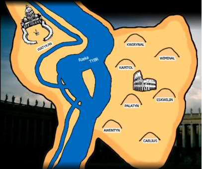
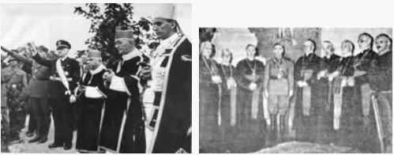
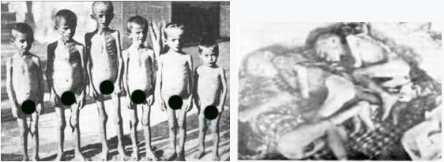
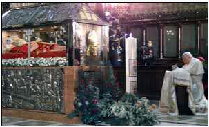

Zbrodnie papiestwa
Słowo Boże - Biblia obnaża papieski system eklezjalny jako system odstępczy od ,,wiary, która raz na zawsze została przekazana świętym” (Judy 3 por. Ef. 2:20).
Kilka wieków od swego powołania oficjalny kościół, kościół rzymski i jego przywódca, papież, stał się apostołem i siewcą śmierci!
Tragedii dopełniał fakt – oficjalny Kościół prześladował, i w wymyślny i okrutny sposób mordował prawdziwych naśladowców Ukrzyżowanego Pana.
Słowo Boże jednoznacznie określa system papieski, jako „człowieka grzechu” i „syna zatracenia” (2 Tes. 2:3-9).
I chociaż jego poddani nazywają go „ojcem świętym”, to Bóg w swoim Słowie nazywa go „niegodziwcem, który przyszedł za sprawą szatana” (2 Tes. 2:9).
Przestępstwa jego przeciwko Bogu i Jego Prawdzie nie mają sobie równych, a jego zbrodnie przeciwko dzieciom Bożym są straszne.
Diabeł dał moc prześladowania, by męczono i mordowano lud Boży w różny wymyślny sposób.
Wierni ginęli wtedy w lochach z głodu, ścinano ich, i palono na stosach, zdzierano z nich skórę, łamano kołem, ściskano stopy w „żelaznym bucie”, rozdzierano końmi, wyrywano języki, wyłupiano oczy.
Tak zwana „święta inkwizycja” miała cały arsenał najwymyślniejszych, bestialskich narzędzi tortur i sposobów dbając o to, by nie umierali zbyt szybko.
Idea inkwizycji zrodziła się w IV wieku, gdy chrześcijaństwo stało się religią państwa. Od tego czasu kościół prześladował przy pomocy świeckiego aparatu władzy, który był na jego usługach.
W 1252 roku papież Innocenty IV zatwierdził bullą „Ad extirpanda” użycie tortur i głodu wobec posądzonych o herezję.
Inkwizytorzy, zwykle dominikanie, posługiwali się takimi metodami jak wykręcanie i łamanie kości, wyrywanie paznokci, miażdżenie palców i głowy, oślepianie, przypiekanie rozpalonym żelazem.
Dodatkową motywacją dla władz świeckich, aby palić na stosie ludzi skazanych przez inkwizytorów było przekazanie im części mienia oskarżonego o herezję.
Mienie jego rodziny było konfiskowane, a dzieci nie miały prawa piastować żadnego urzędu.
W ten sposób skazywano rodzinę tzw. heretyka na nędzę, aby odstraszyć ludzi od porzucania kościoła.
Chociaż historycy nie uzyskali zgodności do liczby ofiar, to prawdopodobnie znacznie zaniżone szacunki wskazują na 50 milionów męczenników.
W tym samym czasie organizowane są „wyprawy krzyżowe”, które niosły cierpienie i nędzę, zniszczenie i śmierć kolejnym setkom tysięcy istnień ludzkich zarówno na Zachodzie, jak i na Wschodzie.
Mordując Boże dzieci odstępczy kościół starał się dodatkowo zniszczyć im opinię.
Przedstawiano ich, jako odstępców i heretyków, przypisując im wszelkiego rodzaju zdrożne postępki i praktyki, posądzając o niemoralność bądź wprost konszachty z diabłem.
Kościół przez bardzo długi okres prześladował i skazywał na stos chrześcijan, nawet za posiadanie, czytanie, nie mówiąc już o rozprowadzaniu czy przepisywaniu fragmentów Pisma Świętego.
Ci, którzy to czynili byli bezlitośnie prześladowani, jak na przykład Miguel Servet lub William Tyndale, który zginął na stosie za wydanie Pisma Świętego w języku angielskim.
Papiestwo robiło wszystko, aby tylko ludzie nie mieli dostępu do Pisma Świętego, gdyż wiedzieli, że wówczas zostaliby zidentyfikowani, jako słudzy diabła…
Papież Klemens XI w 1717 roku, nazwał Nowy Testament Pisma Świętego "szerzącą się zarazą" !!!
Katolicy mieli nie tylko zakaz czytania i rozpowszechniania zakazanych ksiąg, ale też obowiązek donosu odpowiednim władzom o pojawieniu się ich i obowiązek ich zniszczenia.
Za złamanie zakazu groziły poważne konsekwencje z karą śmierci włącznie.
Jednym ze znamion antychrysta są jego imiona: „człowiek niegodziwości (grzechu)” i „syn zatracenia” (2 Tes. 2:3), które znalazły odbicie w licznych błędach doktrynalnych, dogmatach wiary katolickiej, sprzecznych z Biblią.
Najjaskrawszym tego przykładem jest wiara w trzech bogów, zmiana przykazań Bożych oraz przyjęcie wierzeń pogańskiego pochodzenia (kult Marii, tzw. świętych, ich relikwii i obrazów, nieśmiertelnej duszy i czyśćca).
Imiona te znalazły odbicie również w demoralizującym trybie życia papieży.
Korupcja, symonia, nepotyzm, rozwiązłość wielu papieży średniowiecza, powołanie inkwizycji w celu tropienia czarownic i innowierców, organizowanie krucjat przeciwko niewiernym oraz „heretykom” (albigensi, waldensi) i pozbawienie życia wielu milionów ludzi – oto historia papiestwa.
Wielu papieży wstąpiło na tron, mordując (zwykle za pomocą trucizny) swych poprzedników.
Wielu walczyło na polach bitew i wydawało wyroki męczeńskiej śmierci.
Krwawe dzieje papiestwa bezbłędnie i jednoznacznie dowodzą, z jaką instytucją mamy do czynienia i kto za tym wszystkim stoi.
Jedno jest pewne: nie stoi za tym duch Chrystusowy, lecz przeciwny – szatański!
Jak bowiem napisał apostoł Paweł:
„ów niegodziwiec przyjdzie za sprawą szatana z wszelką mocą,wśród znaków i rzekomych cudów i wśród wszelkich podstępnych oszustw” (2 Tes. 2:9–10).
A zatem wszelka moc (polityczne możliwości), znaki (sakramentalne), rzekome cuda (przeistoczenie, objawienia, rzekome uzdrowienia w miejscach kultu maryjnego lub za sprawą np. Jana Pawła II) i wszelkie podstępne oszustwa – wszystko to demaskuje system, na czele, którego stoi „syn zatracenia”, który jak Judasz pocałunkiem zdradza swego Pana, nadal twierdząc, że służy swemu Mistrzowi.
W historii świata znajdziemy tylko jedną instytucję odpowiadającą wszystkim wymienionym w Biblii cechom antychrysta.
System, ten i jego działalność, został zidentyfikowany, na przykład, w księdze Objawienia, jako „kobieta”, która upija wszystkie narody świata kłamstwami:
„I przyszedł jeden z siedmiu aniołów, mających siedem czasz, i tak się do mnie odezwał: Chodź, pokażę ci sąd nad wielką wszetecznicą, która rozsiadła się nad wielu wodami, (2) z którą nierząd uprawiali królowie ziemi, a winem jej nierządu upijali się mieszkańcy ziemi. (4) A kobieta była przyodziana w purpurę i w szkarłat, i przyozdobiona złotem, drogimi kamieniami i perłami; a miała w ręce swej złoty kielich pełen obrzydliwości i nieczystości jej nierządu. (5) A na czole jej wypisane było imię o tajemniczym znaczeniu: Wielki Babilon, matka wszetecznic i obrzydliwości ziemi. (6) I widziałem tę kobietę pijaną krwią świętych i krwią męczenników Jezusowych.(9) Tu trzeba umysłu obdarzonego mądrością. Siedem głów, to siedem pagórków, na których rozsiadła się kobieta(18) A kobieta, którą widziałeś, to wielkie miasto, które panuje nad królami ziemi." (Obj. 17:1-2, 4-6, 9, 18).
Werset 9 i 18 pozwala nam jeszcze dokładniej zidentyfikować, o kogo chodzi.
Miastem zbudowanym i jedynym znanym z położenia na siedmiu wzgórzach, które rządzi "królami świata" od pierwszego i poprzez kolejne wieki - jest RZYM!
Co do tego nie ma żadnych wątpliwości!
Licząc od Tybru i idąc zgodnie z ruchem wskazówek zegara mamy:
1. Kapitol,
2. Kwirynał,
3. Wiminal,
4. Eskwilin,
5. Celius,
6. Palatyn,
7. Awentyn.

Już za czasów Jana nie było wątpliwości, które miasto leży na siedmiu wzgórzach, na przykład na rzymskiej monecie z 70 r.n.e. z okresu cesarstwa Wespazjana, widnieje kobieta siedząca na siedmiu pagórkach Rzymu…
Możemy z niesamowitą dokładnością zidentyfikować „nierządnicę” z 17 rozdziału.
Kościół rzymsko-katolicki sam siebie nazywa Matką Kościołów.
Nazywa się sam, pierwszym albo pierwotnym kościołem.
I słusznie, gdyż, to właśnie on był pierwszym rzymskim kościołem, który pogrążył się w grzechu.
On był pierwszym, który się zorganizował.
W nim znalazły się ohydne uczynki i odstępcza nauka.
Nikt nie będzie także zaprzeczał temu, że on jest matką i zrodził córki.
Niewiasta przyodziana w szkarłat siedzi na siedmiu rzymskich pagórkach jest nierządnicą, która zrodziła córki.
Tymi córkami są protestanckie kościoły, które z niej wyszły, a następnie powróciły lub nadal powracają wprost do organizacji.
Matka wszetecznic, gdyż wiele nurtów religijnych powstało na bazie wiary rzymsko-katolickiej.
Ostatnimi czasy widać jak córy powracają do matki w ruchu EKUMENIZMU, gdzie pierwszym i podstawowym warunkiem przyjęcia jest uznanie boga w trzech osobach.
Oto fragment przedmowy do Indeksu Ksiąg Zakazanych autorstwa Rafaela Merry del Vala dyplomaty watykańskiego, sekretarza stanu, kardynała:
"Dzisiaj piekło wspiera straszniejszy jeszcze oręż przeciw Kościołowi, zdradliwy, banalny i szkodliwy: złowrogą maszynę drukarską. Nie było w przeszłości większego zagrożenia spoistości Kościoła i moralności, zatem święty Kościół nigdy nie zaprzestanie podtrzymywać tej świadomości wśród chrześcijan (...)Kościół, jako troskliwa matka, strzeże wiernych przez stosowne zakazy, ażeby nie przykładali warg do czary z trucizną.”
Czy powyższy fragment dotyczy średniowiecza? - nie, to uzasadnienie do wstępu z 1948 roku.
Ta troskliwa i kochająca matka paliła na stosach swe niesforne dzieci, wymuszając na nich torturami przyznanie się do win najczęściej niepopełnionych.
Wszystko to z miłości, w trosce o ich dusze.
Tak wyglądała ta matczyna ochrona przed złem.
Wielu oprawców i zwykłych morderców tzw. "Świętej Inkwizycji" zostało świętymi krk.
Trudno o większy szczyt zakłamania, pychy i cynizmu, jednakże w encyklice z 20 czerwca 1894 roku, Leon XIII zadeklarował:
"Na tej ziemi zajmujemy miejsce Boga Wszechmocnego”, domagając się "tak zupełnej uległości i posłuszeństwa woli Kościoła i papieża, jak wobec samego Boga". - Papież Leon XIII, w Encyclical Letter, 20 czerwiec, 1894.
"Papież jest nie tylko reprezentantem Jezusa Chrystusa, ale samym Jezusem Chrystusem, ukrytym za zasłoną ciała." - The Catholic National, lipiec 1895.
Kościół rzymsko-katolicki, uprawia duchowy nierząd, upija ludzi kłamstwami, zwodzi ich używając chrześcijańskich nazw, tytułów, pięknych słów, a nawet fragmentarycznie Pisma Świętego.
Na podstawie rozdziału 17 księgi Objawienia, można sporo napisać na temat kościoła rzymsko katolickiego, ale to nie jest główny temat tego artykułu.
Nie mam pojęcia jak ktoś, kto czytając 17 rozdział księgi Objawienia, znając trochę historię i chociaż trochę Biblię może mieć jakiekolwiek wątpliwości, że kobietą-nierządnicą jest instytucja kościoła rzymskokatolickiego z siedzibą w Watykanie???
Karą dla Nierządnicy za zwiedzenia, zbrodnie i nierząd jest „spalą ją w ogniu” (Ap.17:16).
Czy słusznie?
Przypomnijmy tylko najważniejsze zbrodnie oprawców w sutannach oraz uświęcone akty terroru dokonywane przez katolików świeckich pod przewodnictwem kapelanów.
Zasada była taka sama, jak w islamskim dżihadzie – wieczne zbawienie za mordowanie niewiernych.
Szacunkowe liczby ofiar z kilku źródeł:
1096 – pierwsza wyprawa krzyżowa.
Wymordowanie Żydów nad Renem i Dunajem – ponad 20 tys. ofiar.
1099 – krzyżowcy zdobywają Jerozolimę – 50 tys. ofiar.
1202–1204 – czwarta krucjata na rozkaz papieża Innocentego III – 100 tys. ofiar.
1207 – armia Innocentego III wycina w pień katarów (30lat) – 100 tys. ofiar.
1226 – Krzyżacy mordują Prusów – 300 tys. ofiar.
1453 – z inicjatywy świętego J Kapistrana wymordowano Żydów na Śląsku–30 tys. ofiar
1450–1750 – polowanie na „czarownice” na podst. bulii Innocentego VIII – 150 tys. ofiar.
1478 – papież Sykstus IV wysyła do Hiszpanii inkwizytora, Torguemadę – 250 tys. ofiar.
Macki Imperium Kościelnego sięgały wszędzie:
1492 - Kolumb odkrył Amerykę.
Inkwizycja szybko postępuje śladami odkrywców. Tubylców, którzy nie chcieli nawrócić się na wiarę katolicką mordowano. Gdy była taka sposobność, przed zabiciem oporni Indianie byli przymusowo chrzczeni.
1492 – XVII w. – katolicy wyniszczają ludność Wysp Karaibskich – 3,5 miliona ofiar.
1493 - Bulla papieska uprawomocniła deklarację wojny przeciwko wszystkim narodom w Ameryce Południowej, które odmówiły przyjęcia katolicyzmu.
W praktyce kobiety i mężczyzn szczuto psami karmionymi ludzkim mięsem i ćwiartowanymi żywcem indiańskimi niemowlętami. Wbijano ciężarne kobiety na pale, przywiązywano ofiary do luf armatnich i puszczano je z dymem. Mordowano, gwałcono, ucinano ręce, nosy, wargi, piersi. Gdy katoliccy "misjonarze" zawitali do Meksyku, żyło tam około 11 milionów Indian, a po stu latach już tylko półtora miliona. Szacuje się, że w ciągu 150 lat zabito, co najmniej 30 milionów Indian.
XVI–XVIII w. – misjonarze i żołnierze mordują Indian Amazonii – 5,5 miliona ofiar.
XVI–XVIII w. – porwania niewolników w Afryce – 100 milionów ofiar.
1555–1559 – inkwizycja za czasów papieża Pawła IV – 800 tys. ofiar.
1568 – na rozkaz papieża Piusa V (późniejszy święty) inkwizycja hiszpańska zaczyna mordować protestanckich Niderlandczyków – 2 miliony ofiar.
1573 – noc św. Bartłomieja (23/24.08), czyli rzeź hugenotów.
Papież Grzegorz XIII odprawia mszę dziękczynną, wybija medal pamiątkowy i organizuje radosne festyny na ulicach – 25 tys. ofiar.
1648 – koniec wojen religijnych w Niemczech podsycanych przez papiestwo. (Innocenty X protestuje przeciwko ugodzie z protestantami) – 13 milionów ofiar.
1648 – pogromy żydów w Polsce – 100 tys. ofiar.
1980 - Beatyfikacja jezuity José de Anchieta, który twierdził: "Miecz i żelazny pręt to najlepsi kaznodzieje".
Podczas beatyfikacji masowego mordercy Indian, papież Jan Paweł II nazwał go apostołem Brazylii, wzorem dla całej generacji misjonarzy i siebie samego.
W miesięczniku Fakty i Mity nr 13, 28.03.2002 r. pt. WYSPY WIELKANOCNE, czytamy:
"A może Karol Wojtyła przez lata ani razu nie zajrzał do archiwów watykańskich i nic nie wiedział o pamiętnikach mnicha tamże przechowywanych? Może nawet nie wie, że jeszcze w Roku Pańskim 1812 jezuita Coronil nakazywał katolickim żołnierzom wyruszającym przeciw indiańskim powstańcom w Wenezueli: „Zabijcie wszystkich powyżej siódmego roku życia”.Nie wie?Wszak w 1980 r. beatyfikował Jose de Anchieta, którego nazywał „bożym człowiekiem”, „pionierem ewangelizacji”, „apostołem Brazylii”, „wzorem dla całej generacji misjonarzy”.To ten sam „pionier ewangelizacji”, a tak naprawdę zwyrodniały morderca, który zwykł powtarzać słynne zdanie, że „miecz i żelazny pręt to najlepsi kaznodzieje”. W skutek takiej ideologii wymordowano w obu Amerykach więcej niż 50 milionów Indian."
1941 – 1945 – w Chorwacji rządzi Ante Pavelić popierany przez Piusa XII – 800 tys. ofiar.
Pius XII był osobiście odpowiedzialny za ludobójstwo, co najmniej pół miliona prawosławnych Serbów, Żydów i Romów w Chorwacji, Bośni i Krajinie przez zbrodniczy reżim ustaszy w latach 1941-45.
Ustasze byli wspierani i organizowani przez zakon franciszkanów – przy pełnej wiedzy Watykanu.
Poniżej widac, jak arcybiskupi błogosławią oddziały ustaszów.

Wykonawcą rozkazów był kardynał Stepinac, który przejął władzę w Chorwacji i rozpoczął rzeź Serbów, którzy nie chcieli nawrócić się na katolicyzm.
Rzeź tak okrutną, że aż trudno uwierzyć...
W tym dzieci... (poniżej zdjęcia z obozów ustaszy).

Dyktaturę w Chorwacji, rządzonej przez ustaszów Ante Pavelicia, najlepiej określił sam chorwacki minister edukacji dr Mile Budak:
"Część Serbów wybijemy, część wygnamy, a resztę, która musi przyjąć religię katolicką, włączymy do narodu chorwackiego (...) Wszystkie nasze poczynania wynikają z wierności wobec religii i Kościoła Katolickiego".
(LINK:http://www.racjonalista.pl/kk.php/s,6557)
Morderca kardynał Stepinac, został w 1998 roku beatyfikowany i ogłoszony męczennikiem przez Jana Pawła II…
Papież złożył publicznie hołd samemu Paveliciowi w 1998 roku, modląc się przed jego mauzoleum.

Obecnie Watykan chce beatyfikować Piusa XII, który współpracował z Hitlerem oraz popierał działania Stepinaca...
Nie oszukujmy się to jest wciąż to sama ohydna, zakłamana nierządnica, która prześladowała prawdziwy lud Boży i będzie to czyniła zawsze, gdy nadarzy się dogodna okazja.
Zobaczcie:
http://www.eioba.pl/a84911/ustasze...mordy
Pan powiedział:
„Po owocach poznacie ich” (Mat. 7:20).
„Nie ma bowiem nic ukrytego, co by nie miało być ujawnione i nic nie pozostało utajone, co by nie wyszło na jaw” (Marka 4:22).
Chociaż wielu szczerym katolikom może wydawać się to nieprawdopodobne, szokujące, a nawet bulwersujące, teza o apostazji papiestwa oraz duchu antychrysta, który przez całą historię papiestwa przejawiał się prawie we wszystkim, co biskupi Rzymu zamyślali, głosili i czynili, nie jest przesadzona ani o jotę.
Potwierdzają to bowiem zarówno fakty historyczne, bo obnażają system papieski jako system bezprawia, który przez wiele wieków był zdolny do największych zbrodni, jak i Biblia, którą kościół papieski od samego początku próbował zniszczyć, ukryć, zakazać, jako największe zagrożenie i którą traktuje wybiórczo.
Prawda jest, więc taka, że Kościół rzymski tylko pozornie wydaje się wierny Chrystusowi, a w gruncie rzeczy jest Kościołem odstępczym, zbudowanym na śmiertelnym człowieku – samozwańczej opoce – i jego przemijającym królestwie.
Takie są fakty.
Tych zaś nie da się ukryć, chociaż Kościół rzymski robi wszystko, aby je zatuszować…
Gdziekolwiek, więc mamy do czynienia z występowaniem doktryn i zwyczajów sprzecznych z nauczaniem Chrystusa, ze zdrowym rozsądkiem, z bezmyślnym i ślepym podporządkowaniem się jakiejkolwiek instytucji kościelnej (nie tylko katolickiej, ale każdej innej, na przykład „Organizacji Świadków Jehowy”, czy „ADS”), tam mamy do czynienia z wiarą fanatyczną, karykaturą wiary ewangelicznej, a więc z czymś szkodliwym, bo w rezultacie zgubnym dla jednostki, jak i dla społeczeństwa.
Istnieje ogromna różnica pomiędzy żywą wiarą a wiarą martwą.
Jedną i drugą rozpoznać możemy po owocach (Mat. 7:20).
Pierwsza wyraża się zmianą w życiu człowieka, której dokonuje Bóg i Jego Słowo.
Wyraża się zaufaniem i poleganiem na Bogu oraz praktycznym chrześcijaństwem, przewartościowaniem celów, priorytetów, pojęciem sensu życia.
Natomiast świadome trwanie w systemie religijnym, w wierze, która stoi w rażącej sprzeczności z ewangelicznym przesłaniem Słowa Bożego, jest złe, grzeszne i prowadzi do zguby.
Grzech jest bowiem rozminięciem się z wolą Boga, Jego przykazaniami, z nauką proroków, uczniów Pańskich, a w szczególności i przede wszystkim z „wiarą Jezusa” (Obj. 14:12).
Wierzyć więc bezpodstawnie jest szczytem fanatyzmu!
Jedyną prawdziwa wiara - to przynależność do Chrystusa - słuchanie i naśladowanie naszego Pana we WSZYSTKIM!
System religijny, w którym znalazła się większość ludzkości, nie zdaje sobie sprawy z głębi jego odstępstwa.
Czy brak świadomości zwalnia z odpowiedzialności za swe przekonania?
Obawiam się, że nie.
Podczas sądu ludzie będą potępieni nie dlatego, że uwierzyli kłamstwu i z przekonaniem go bronili, ale dlatego, że mając sposobność nie uwierzyli prawdzie…
P.s.
Zachęcam także do poczytania trzy-częściowego komentarza do 17 rozdziału księgi Objawienia:
https://mojabiblia.github.io/j/55.html
https://mojabiblia.github.io/j/56.html
https://mojabiblia.github.io/j/57.html
↞ Spis treści
kopia strony: https://jehoszua.ddv.pl/readarticle.php?article_id=16 Wszelkie prawa autorskie należą się autorowi tej strony
za94b0fb8d0z